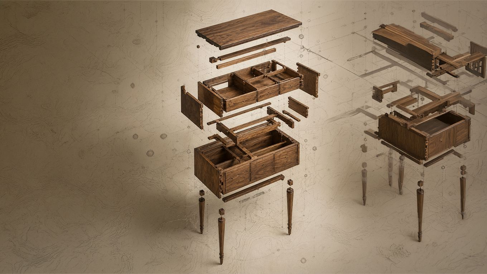

Programa fundamental
Restauración Integral
El recorrido completo: leer, desarmar, intervenir y reinterpretar.
8 sem · Presencial · BA
$118.000 ARS/mes
- Técnicas históricas con visión contemporánea
- Taller con piezas reales desde el día 1
- Certificado profesional avalado